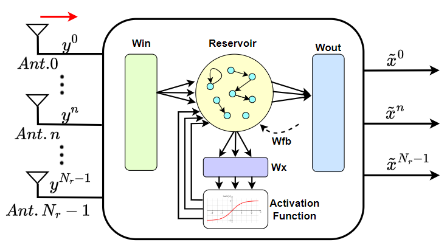
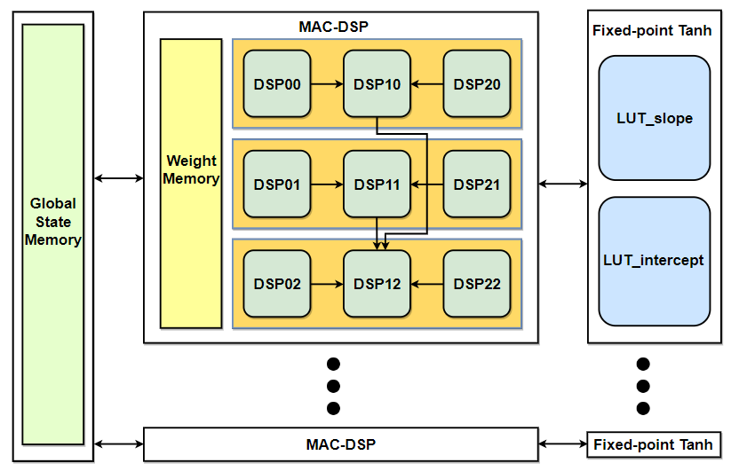
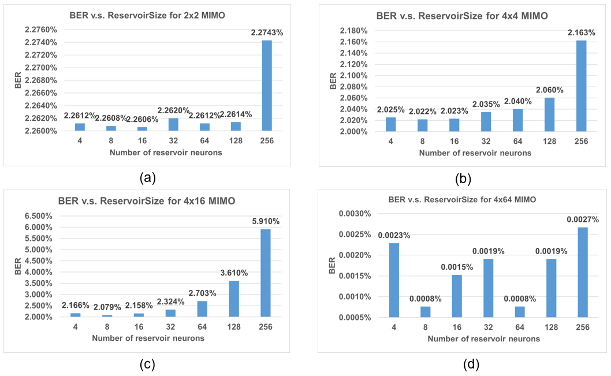
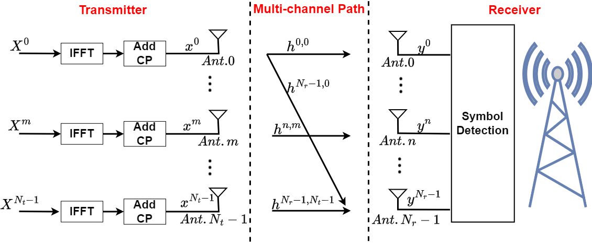

Scalable ESN symbol detector for massive MIMO-OFDM
Symbol detection in massive MIMO-OFDM, a key 6G technology, is hard for channel-estimation methods such as LMMSE because accurate CSI for many antennas is costly to obtain. This work applies an echo state network (ESN) detector to MIMO sizes up to 4x64 in simulation and builds a DSP-based FPGA accelerator for it, validated as a 2x2 proof of concept on a Virtex-7 SDR/FPGA testbed.
Design
ESN symbol detector with pilot training
The received time-domain signals from all Nr antennas feed an ESN whose readout predicts the transmitted symbols of every stream. Only the output weights are trained, first on the known training-sequence symbols and then recursively on pilot subcarriers in each data symbol, so the detector keeps tracking a changing channel without explicit channel estimation.
Nine-DSP reservoir neuron
Each neuron's 48 multiplications and 47 additions (40 inputs + 8 reservoir states in the 2x2 design) run on only 9 DSP48E1 slices, avoiding a CLB-based adder tree. Stage I performs 9 parallel MACs, Stage II compresses them to 3 sums over the PCIN/PCOUT cascade, and Stage III merges those into one, taking ⌈(Nres+Nin)/9⌉+1+2+2 clock cycles per update.
Fixed-point tanh
The neuron's sum indexes two 2^8-entry look-up tables holding the slope and intercept of a first-order piecewise-linear tanh, and a further DSP computes slope·x + intercept. The output saturates for |x| ≥ 8, where the tanh error is below 10^-6, and symmetry means only the positive half is stored.
Sizing and proof-of-concept testbed
An 8-neuron reservoir (second-best BER, half the DSPs of 16 neurons) with 40 inputs and 4 outputs is implemented, with 16-bit output weights at 2^-5 precision. The design runs at 125 MHz on a Virtex-7 board connected by Ethernet to GNU Radio and two USRPs, and is tested in 5 line-of-sight and blocked scenarios in an RF lab.


Results
- Simulated BER with 1,024 subcarriers, ESN vs LMMSE: 2.261% vs 5.460% (2x2), 2.022% vs 13.088% (4x4), 2.079% vs 3.167% (4x16) and 0.001% vs 6.680% (4x64).
- From 2x2 to 4x64 MIMO, ESNs with 8-16 reservoir neurons give the lowest BER in most cases, so the reservoir need not grow with the antenna count.
- FPGA processing speed of up to 34.8 M input samples/s, almost 3.3× the 10.53 M samples/s of a SISO-specific ESN FPGA implementation.
- Against that SISO design: 50% less BRAM and 33.3% fewer DSP blocks, with 21.4% more LUTs and 33% more FFs.
- Utilization: 13,314 LUTs (4.9%), 10,750 FFs (1.77%), 6 BRAMs (0.58%) and 108 DSPs (3.86%); 0.256 W dynamic and 0.262 W static power at 125 MHz.

Publication
